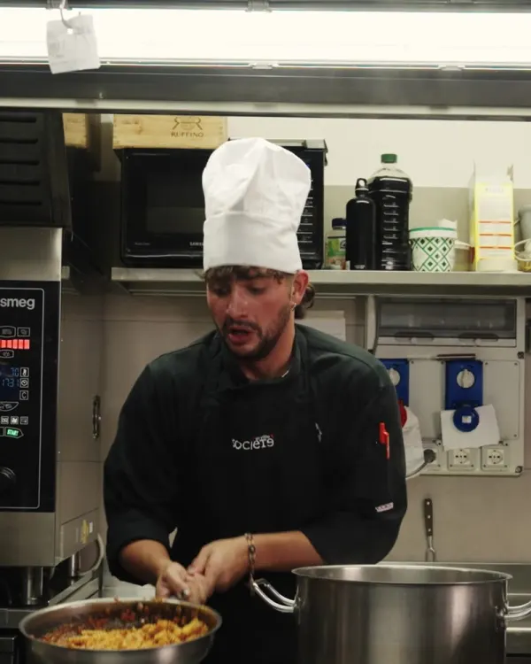
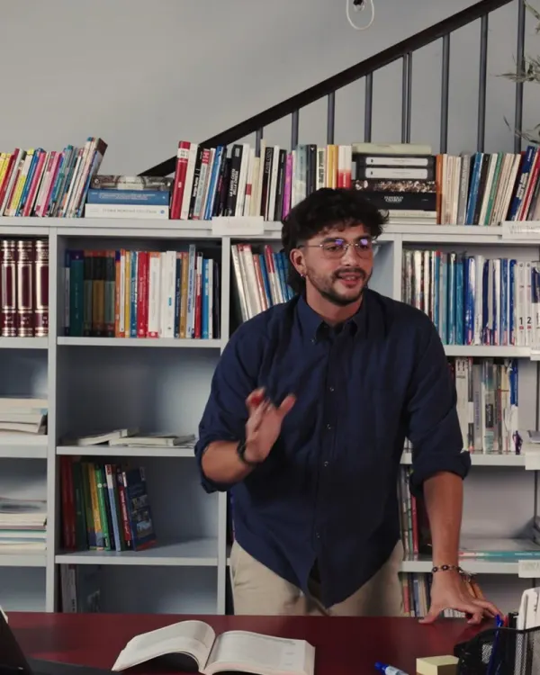
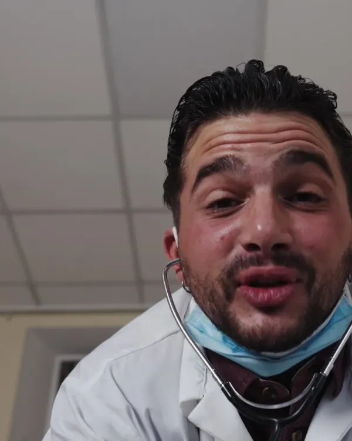
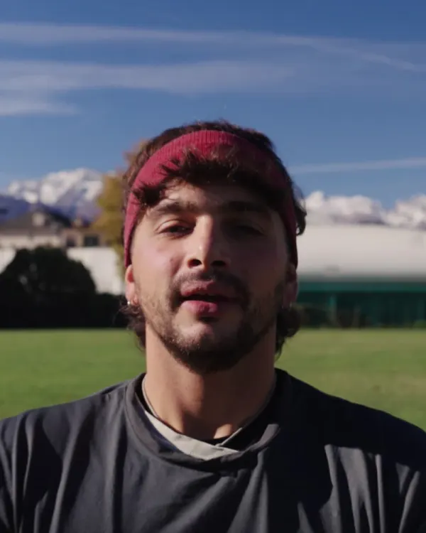
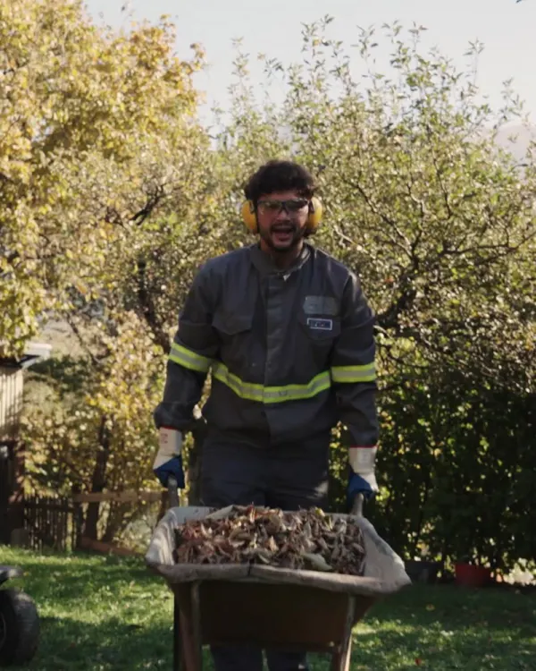
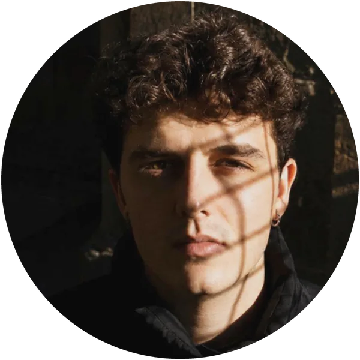
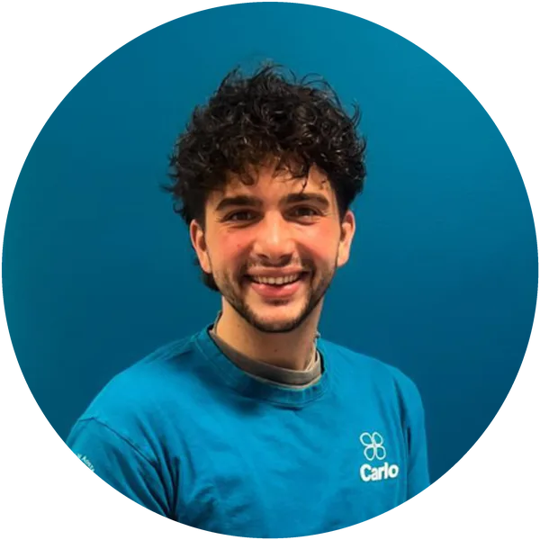
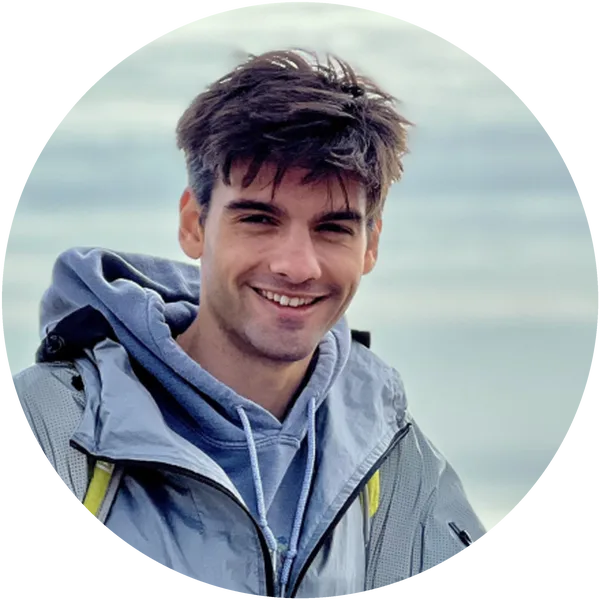

Una giornata. Un mestiere. Un racconto.
La docuserie sul lavoro in Valle d'Aosta. Prima stagione da dicembre 2026.
Guarda la siglaPrima stagione da dicembre 2026
Che lavoro voglio fare, davvero?
È la domanda che quasi tutti, prima o poi, si fanno: dopo la scuola, durante gli studi, nei primi anni di lavoro. Spesso non manca la voglia. Manca l'occasione di vedere un mestiere da vicino e di parlarne con chi lo fa ogni giorno.È la domanda che quasi tutti, prima o poi, si fanno. Spesso non manca la voglia: manca l'occasione di vedere un mestiere da vicino.
Un giorno da… è una docuserie girata in Valle d'Aosta. In ogni episodio Carlo passa una giornata intera dentro un mestiere: arriva quando si comincia, prova a fare quello che fanno gli altri e resta fino a fine turno.Un giorno da… è una docuserie girata in Valle d'Aosta. In ogni episodio Carlo passa una giornata intera dentro un mestiere, dalla prima ora all'ultima.
La serie in breve
- Formato
- Docuserie per YouTube e i social
- Episodi
- Cinque, da circa 40 minuti
- Girata in
- Valle d'Aosta
- Per chi
- Chi ha tra 15 e 29 anni e sta scegliendo che lavoro fare
- Tono
- Diretto e reale. Niente attori, niente finzione
- Prima stagione
- Da dicembre 2026 ad agosto 2027
Dentro il mestiere. Senza filtri.
-
Il lato professionale
Come funziona il mestiere nella pratica: gli strumenti, le competenze, una giornata tipo.
-
Il lato umano
Il percorso dietro ogni scelta: dubbi, cambiamenti, sacrifici, e cosa ti fa sentire nel posto giusto.
-
Niente finzione
Ritmo veloce, riprese immersive, qualità da documentario. Niente attori e nessun copione da recitare.





Come nasce un episodio
Per ogni episodio servono tre cose: una realtà che apre le porte, un mestiere da raccontare e chi lo fa ogni giorno.
- 01
Incontro
Con la realtà che ci apre le porte scegliamo mestieri, persone e luoghi.
- 02
Scrittura
Copione e scaletta: le tappe della giornata e cosa mettere in risalto.
- 03
Riprese
Più giornate di riprese per raccontare una sola giornata sullo schermo.
- 04
Montaggio
Circa 40 minuti di episodio, più le clip brevi per i social.
- 05
Uscita
L'episodio su YouTube, teaser e clip sui social, incontri nelle scuole.
Prima stagione
Cinque episodi, uno ogni due mesi. I mestieri restano segreti fino all'uscita: per ora possiamo dirvi solo quando.
-
2026
Dicembre
Episodio 1
-
2027
Febbraio
Episodio 2
-
2027
Aprile
Episodio 3
-
2027
Giugno
Episodio 4
-
2027
Agosto
Episodio 5
Tocca un mestiere per provare a sbirciare.
Oltre agli episodi
Sui social
Teaser prima di ogni uscita, clip brevi dagli episodi e rubriche pensate per il telefono.
Nelle scuole
Incontri nelle ore di orientamento delle superiori, da dicembre a maggio.
Dal vivo
Una serata di lancio con la prima visione, a dicembre, e una serata finale a fine stagione.
I fondatori
-

Riccardo Fiou
Videomaker e produttore
Videomaker freelance, laureato in Ingegneria del Cinema al Politecnico di Torino. Ha lavorato con Golden Goose, Adidas, AW LAB e con la Regione per «Aosta capitale della cultura».Videomaker freelance, Ingegneria del Cinema al Politecnico di Torino.
-

Carlo Giordano
Conduttore e protagonista della serieConduttore e protagonista
Entra nei mestieri, li vive e li racconta in prima persona. Libero professionista nelle politiche giovanili: progettazione e mobilità internazionale con Erasmus+.Entra nei mestieri, li vive e li racconta in prima persona.
-

Gabriele Pesando
Autore e parte tecnica
Ricercatore, laurea magistrale in Intelligenza Artificiale alla Statale di Milano. Consulente in progetti di ricerca applicata e sviluppo software.Ricercatore, laurea magistrale in Intelligenza Artificiale.
Scrivici.
Aziende e realtà del territorio
Apriteci le porte per una giornata: scegliamo insieme mestieri, persone e luoghi.Apriteci le porte per una giornata.
Scuole
Portiamo la serie in classe, nelle ore di orientamento.Portiamo la serie in classe.
Stampa, radio e tv
Interviste, materiali e anteprime degli episodi.Interviste, materiali e anteprime.
Un'idea
C'è un mestiere che vorresti vedere raccontato? Diccelo.C'è un mestiere che vorresti vedere? Diccelo.